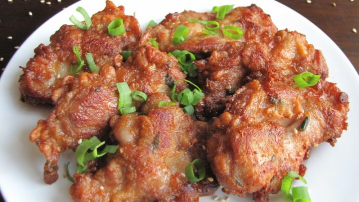

Mochiko Chicken Recipe

Description
Mochiko chicken is chicken that has been marinated in a mochiko flour batter, then deep fried. The resulting morsels of savory-sweet, crunchy yet toothsome chicken are a popular treat in Hawai'i.
Ingredients
- 6 lbs boneless skinless chicken thighs
- 3/4 c mochiko flour
- 3/4 c cornstarch
- 3/4 c sugar
- 3/4 c shoyu
- 6 cloves garlic, minced
- 1 1/2 t ginger, grated
- 3/4 c green onions, sliced thin
- 1 1/2 t salt
- 6 eggs
Steps
- Cut the chicken into uniform, bite-sized pieces.
- In a large bowl, combine the remaining ingredients (the marinate should be thick, about the consistency of peanut butter).
- Coat the chicken evenly with the marinade, and marinate in the refrigerator for at least 4 hours (preferably overnight).
- Take the chicken out of the refrigerator about 20 minutes before frying.
- Fry the chicken in enough oil so that it does not touch the pan when frying. Fry until deep golden brown.